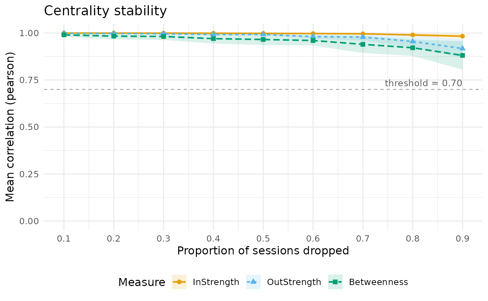

Plot centrality stability against the proportion of sessions dropped
Source:R/methods-stability.R
plot.htna_stability.Rdplot() plots the case-dropping stability of an htna_stability result
from centrality_stability_htna(): for each centrality measure, how
closely the centralities of networks estimated from a subset of sessions
correlate with those of the full network as more sessions are dropped.
A measure whose mean correlation stays above the threshold until a large
share of the sessions is dropped has a node ranking that does not depend
on a few sessions; a measure whose line falls early cannot be interpreted
with confidence. When the result was computed with actor, the
horizontal axis is the proportion of actors dropped.
The plot draws one line per measure (distinguished by colour, line type
and point shape), a ribbon of plus or minus one standard deviation of the
correlations, and a dashed line at the stability threshold. The grouped
method draws one such chart per cohort, titled with the cohort name. The
charts are drawn with 'ggplot2', which must be installed, and are
returned invisibly as ggplot objects. The CS coefficients themselves
are reported by print.htna_stability() and returned as a table by
as.data.frame.htna_stability().
Arguments
- x
A result of
centrality_stability_htna(): anhtna_stabilityor, for a grouped network, anhtna_stability_group.- ...
Unused.
Value
Invisibly, the ggplot object (for htna_stability) or a named
list of ggplot objects, one per cohort (for htna_stability_group).
The charts are printed.
Examples
data(human_ai)
net <- build_htna(human_ai, actor_type = "actor_type")
#> Metadata aggregated per session: ties resolved by first occurrence in 'session_date' (1 sessions), 'cluster' (42 sessions), 'actor_type' (24 sessions)
cs <- centrality_stability_htna(net, iter = 20, seed = 1)
if (requireNamespace("ggplot2", quietly = TRUE)) {
plot(cs)
}
